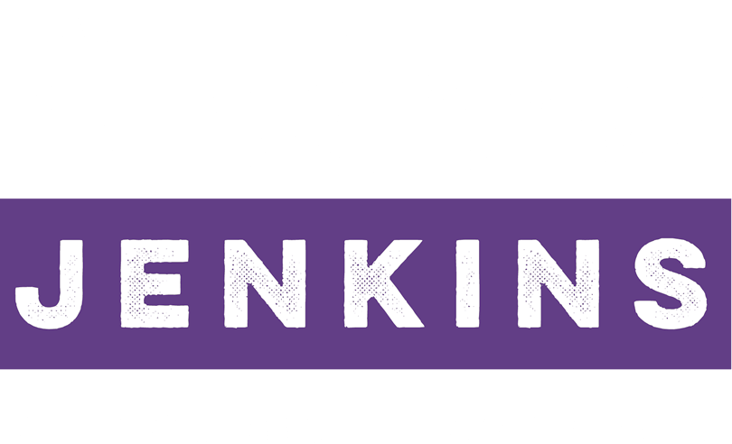

Dear Neighbors,
After much encouragement and deep deliberation, I am excited to announce my campaign to represent the 8th Ward of the City of Minneapolis. I want to thank all of you who checked in on the Facebook page, RunAndreaRun, and to everyone who has texted, called and emailed offering their support. Let me say that I am humbled beyond words and will work hard to gain your continued support.
In this, the cold winter of our political discourse, people are looking for hope. People are seeking inspiration. People are searching for answers. We are reminded that the “Arc of the Moral Universe is long, but it bends towards justice.” This overused axiom is justifiably tired to some, but for many of us it still rings as true today as it did when it rolled so eloquently from Dr. King’s lips.
Please read my press release, donate to this campaign, and sign up for volunteer opportunities. I look forward to meeting with you throughout the course of this campaign to learn about your concerns, your issues, and discuss ways that we can achieve a more equitable, safer and beautiful 8th Ward.
Follow @andreaforward8
Like Andrea for Ward 8 on Facebook
Prepared and paid for by the Andrea for Ward 8 committee — P.O. Box 80791, Minneapolis, MN 55408-3103